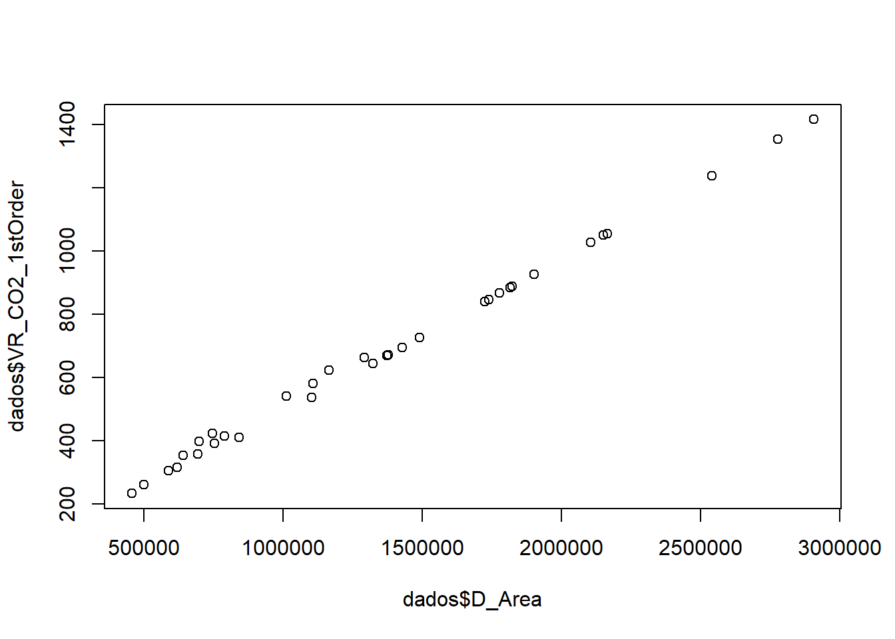
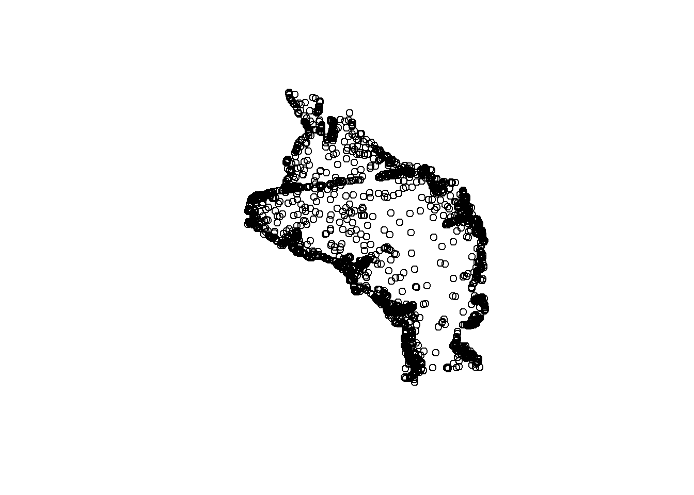

Capítulo 2 Análise Exploratória de Dados
A Análise Exploratória de Dados (EDA) é uma forma de utilizar ferramentas gráficas e estatísticas apropriadas da linguagem R na exploração de dados. A partir da visualização, transformação e modelagem de dados, essa análise explora os dados de forma sistemática (WICKHMAN & GROLEMUND, 2017).
Para aplicar a EDA, de acordo com Wickhman & Grolemund (2017), basta inicialmente gerar questões sobre os dados, utilizar as funcionalidades do R para encontrar respostas e utilizar o que foi aprendido para gerar novas questões. Portanto, essa análise é um ciclo iterativo.
2.1 População e amostra
A População é um conjunto de observações relacionadas a indivíduos com uma característica em comum. Já a Amostra é um subconjunto da população, com uma parte das observações relacionadas à população. A partir da amostra realizam-se inferências sobre as características da população.
É importante que a amostra seja representativa para que os resultados não sejam deturpados.
2.2 Sumarização numérica de dados
Resumos numéricos de dados são fundamentais para realizar inferências estatísticas, porque, de acordo com Montgomery & Runger (2021), “permitem ao engenheiro focar nas características importantes dos dados ou ter discernimento acerca do tipo de modelo que deveria ser usado na solução do problema”. Por isso, torna-se útil descrever numericamente, a partir de medidas de posição, variabilidade e forma, características dos dados.
2.2.1 Medidas de Posição
2.2.1.1 Média
A média é a divisão da soma de todos os valores da série pelo número de obervações n.
\(\bar{x}=\frac{x_{1}+x_{2}+x_{3}...x_{n}}{n}=\frac{\sum x_n}{n}\)
2.2.2 Medidas de Variabilidade
2.2.2.1 Amplitude
Em um conjunto de observações, a Amplitude é a diferença entre o maior valor e o menor.
2.2.2.2 Variância
Para uma amostra de n observações, a Variância será:
\(s=\frac{\sum(x_{i}-\bar{x})^{2}}{n-1}\)
2.2.3 Medidas de Forma
As medidas de forma permitem a verificação de como um conjunto de dados está se comportando em sua distribuição. Gráficos de distribuição de frequência e histogramas são ferramentas importantes para essa verificação.
2.2.3.1 Assimetria
Distribuições em forma de sino são simétricas, já que a média, mediana e moda desse conjunto de dados são iguais. Ou seja, a metade esquerda do histograma é aproximadamente igual à metade direita.
Distribuições assimétricas possuem uma concentração de seus dados, à direita ou à esquerda, no histograma. Ou seja, apresentam uma “cauda” em uma das extremidades. Se a distribuição desses dados estiverem concentrados à direita, são dados com assimetria positiva. Se concentrados à esquerda, assimetria negativa.
Aplicação
Para a aplicação, será utilizada a base de dados do Instituto Nacional de Meteorologia (INMET) de precipitação e temperatura na estação meterológica do Mirante de Santana em São Paulo, dos anos de 2014 a 2016.
No ano de 2014, São Paulo passou pela pior estiagem deste o ano de 1953. Entre o fim de 2014 e o outono de 2016, a cidade registrou o maior El Niño deste 1950. O El Niño, quando ocorre, causa um aquecimento anômalo das águas superficiais e sub-superficiais do Oceano Pacífico Equatorial, porém, não se comporta de forma constante em relação ao volume de chuvas. Uma das dúvidas do período era se o El niño poderia afetar o regime de chuvas e, assim, aumentar a precipitação em São Paulo.
Portanto, iremos aplicar a EDA para verificar essa relação entre o El niño e o volume de chuvas.
Para importar a base de dados em .csv, utiliza-se a função read.csv() e insere-se como argumento o diretório:
met<- read.csv2("~/UFABC Beatriz/TG Beatriz Lima/Dados/data1.csv")
met1 <- na.omit(met) # Omitindo os valores faltantes do conjunto de dadosÉ importante lembrar que read.csv() é utilizado quando os valores são separados por vírgula e decimais por ponto; e, read.csv2(), quando são separados por ponto e vírgula e os decimais por vírgula.
Para visualizar a tabela importada, basta executar a função View():
View(met1)Para iniciar a exploração dos dados, inicialmente será utilizada a função str() que exibe de forma compacta a estrutura da tabela importada.
str(met1)## 'data.frame': 34 obs. of 5 variables:
## $ Data : chr "2014/01/31" "2014/02/28" "2014/03/31" "2014/04/30" ...
## $ NUMDIAS : int 16 14 18 8 6 5 6 12 8 13 ...
## $ PRECIPITACAOTOTAL: num 223 188.8 212.6 77.2 50.2 ...
## $ TEMPERATURAMEDIA : int 25 25 23 21 19 18 18 20 21 21 ...
## $ ANO : int 2014 2014 2014 2014 2014 2014 2014 2014 2014 2014 ...
## - attr(*, "na.action")= 'omit' Named int [1:2] 7 26
## ..- attr(*, "names")= chr [1:2] "7" "26"Continuando, será utilizada a função ´summary()´ para apresentar o sumário de estatísticas descritivas (média, mediana, mínimo, máximo, 1º quartil, 3º quartil e valores faltantes (NA)).
summary(met1)## Data NUMDIAS PRECIPITACAOTOTAL TEMPERATURAMEDIA
## Length:34 Min. : 2.00 Min. : 2.40 Min. :15.00
## Class :character 1st Qu.: 8.00 1st Qu.: 50.35 1st Qu.:18.00
## Mode :character Median :12.00 Median :105.90 Median :21.00
## Mean :12.09 Mean :129.05 Mean :20.82
## 3rd Qu.:16.00 3rd Qu.:201.20 3rd Qu.:23.00
## Max. :22.00 Max. :327.80 Max. :25.00
## ANO
## Min. :2014
## 1st Qu.:2014
## Median :2015
## Mean :2015
## 3rd Qu.:2016
## Max. :2016Para continuar explorando os dados, realizou-se um gráfico de linhas a fim de analisar o comportamento da precipitação em relação às datas.
year <- met1$Data
precip <- met1$PRECIPITACAOTOTAL
df <- data.frame(precipitacao=precip, ano=year)
library(ggplot2)
ggplot(df,
aes(x = ano, y = precipitacao)) +
geom_line(linetype="dashed", color="blue", aes(group=1)) +
geom_point()
A distribuição de frequência da precipitação apresenta assimetria à direita (positiva):
ggplot(data = df,
aes(x = precip)) +
geom_histogram() ## `stat_bin()` using `bins = 30`. Pick better value with `binwidth`.
Após realizar a sumarização numérica de todos os dados, agora será focado nos dados de interesse: precipitação e ano. Primeiramente, será encontrada a média de precipitação por ano analisado, com um intervalo de confiança de 95% (escore-x da curva normal igual a 1,96).
#Média das precipitações por ano
library(dplyr) #instalando o pacote para utilizar o operador pipe %>%## Warning: package 'dplyr' was built under R version 4.1.3##
## Attaching package: 'dplyr'## The following objects are masked from 'package:stats':
##
## filter, lag## The following objects are masked from 'package:base':
##
## intersect, setdiff, setequal, uniontabela_stats <- met1 %>%
group_by(ANO) %>%
summarise(n_obs = n(), media = mean(PRECIPITACAOTOTAL), desvio_padrao = sd(PRECIPITACAOTOTAL)) %>%
mutate(erro = 1.96*desvio_padrao/sqrt(n_obs),
limite_superior = media + erro,
limite_inferior = media - erro)Com o objetivo de analisar a graficamente os valores de precipitação por ano, será utilizado um gráfico de barras com os erros padrões das amostras. Utiliza-se o erro padrão e não o desvio padrão porque, neste caso, estamos interessados na variabilidade das médias das amostras e não na variabilidade das observações dentro da amostra.
#Visualizando a tabela criada com os dados estatísticos
View(tabela_stats)
#Plotando os valores com seus respectivos erros
ggplot (data = tabela_stats, aes(x=ANO, y = media, fill=ANO)) +
geom_col() +
geom_errorbar(aes(ymin=limite_inferior, ymax=limite_superior)) +
ggtitle("Média das precipitações por ano") +
xlab("") +
ylab("") +
theme_bw() +
theme(legend.position = "none")
É possível analisar que houve um aumento do volume de chuvas no ano de 2015, se comparado com o ano de 2014. O valor médio de precipitação de 2016 é ligeiramente maior que a média de 2014. Porém, não é possível afirmar que os valores de precipitação se devem somente ao El niño, porque também existem diversos fatores, não analisados aqui, que podem influenciar no volume de chuvas.